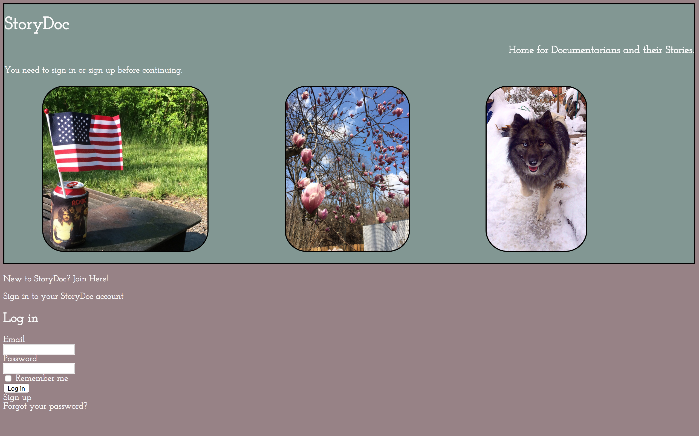

about me
"There are people who presume that unless something comes easily to them, they should never pursue it as a career - without realizing that some of the greatest achievements you ever attain are because you busted ass to reach that point." - Neil deGrasse Tyson
I love clean code, slick design, and strong coffee.
I'm a creative problem solver imbued with a healthy dose of curiosity and tenacity; I don't stop until the work is done.
work

StoryDoc is an application that provides a platform for documentary photographers. a StoryDoc user can package photos and text into individual stories. this offers the user a clean and organized method for both storing and distributing their work. StoryDoc was built entirely in Rails over five days in April 2017.
BookWorm aims to make reading materials more accessible. To that end, BookWorm provides location information for the DC Public Library System, as well as a feature that allows for online book searches. BookWorm was built entirely in React over three days in June 2017.

Simon is a Javascript version of the classic 80s game.

Weatro allows the user to retrieve real-time train arrival data, and real-time weather data, for any rail station in the DC Metro network (WMATA). Weatro was built as a group project, and uses a Rails back-end with an Angular front-end.
MakeaMeme is a dynamic meme generator built using jQuery.